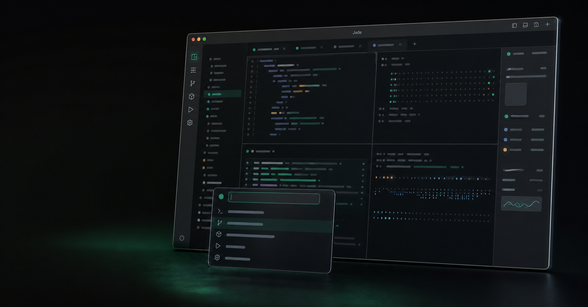
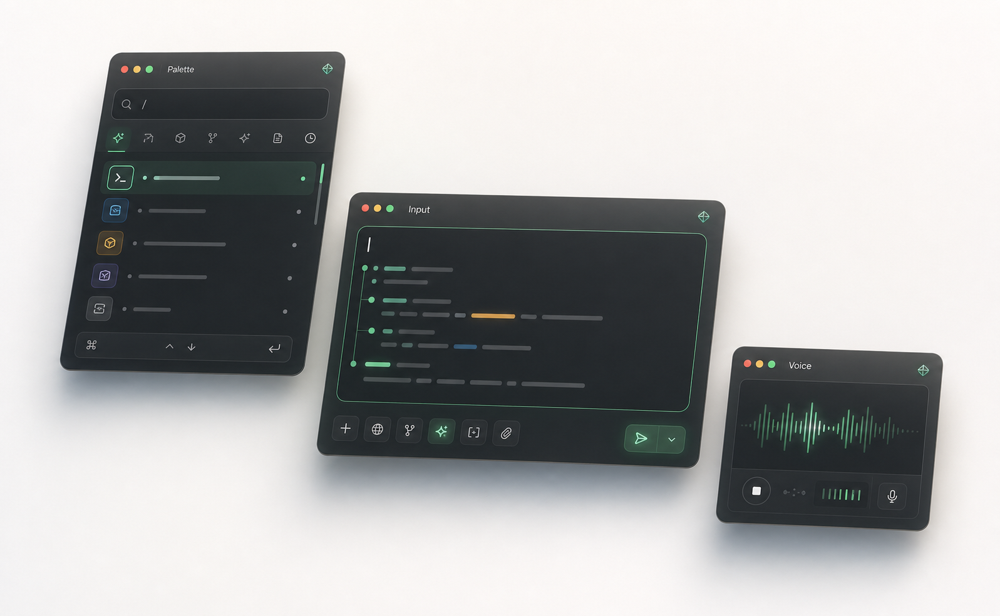

Persistent tabs, split panes, cwd memory, project icons, remote spaces, and a home workspace that stays separate from repo work.

Native macOS terminal workspace
Jade
A project-first terminal for builders who live across repos, branches, panes, notes, and local AI. Jade keeps the shell fast while giving the work around it a real home.
- macOS 14+
- SwiftUI + libghostty
- MIT licensed
- Local-first by default
$ jade ~/work/atlas
opening project workspace...
restored 4 tabs, 3 splits, 2 worktrees
palette ready · snippets synced · local AI online
$
Your projects, not a pile of terminal windows.
Jade is organized around real development context: repo, worktree, tabs, splits, source control, snippets, captures, and the command palette that ties them together.
Built for the whole coding session.
It is still a terminal first. The extra surface exists for the work that normally leaks into tabs, notes, floating windows, and half-remembered commands.
Fuzzy actions, file search, snippets, local ports, theme picker, Homebrew upgrade, Ollama commands, and project-log steps from one place.
Status, branches, worktrees, history, unified and split diffs, GitHub PR create/list through gh, and IDE handoff when needed.
Ollama-backed assistant, natural shell command review, image-aware Rich Input, on-device dictation, and AI usage tracking.
Snippets, terminal-selection capture, project logs, Obsidian MCP export, and session notes that follow the active project.
SwiftUI shell, Metal rendering through libghostty, Sparkle updates, no account requirement, and an MIT license.
Scroll through a focused session.
The terminal stage updates as the page moves, mirroring the way Jade moves from project setup to active work to captured context.
Open a project
Start from a repo path and keep the workspace scoped to that project.
Shape the workspace
Tabs, panes, branches, and editor surfaces stay attached to the repo.
Command from one place
The palette reaches across development actions without crowding the chrome.
Leave a trail
Useful terminal context can become a snippet, note, or project session log.
New mockups, live motion.
The visuals here are generated mockups paired with code-driven terminal animation, palette highlighting, and voice waveform motion.

Install
Build Jade locally from GitHub.
Jade is macOS-only today and stores workspace state locally. There is no packaged download yet, so clone the repo and launch the app bundle from source.
$ git clone https://github.com/aka-kika/jade.git
$ cd jade
$ scripts/setup.sh
$ ./scripts/run-jade.sh
Requires macOS 14+ and Swift 6.0+